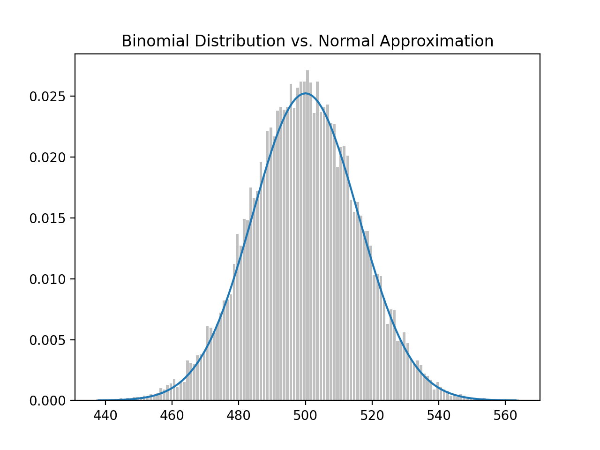
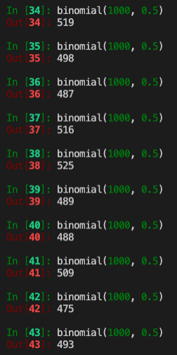
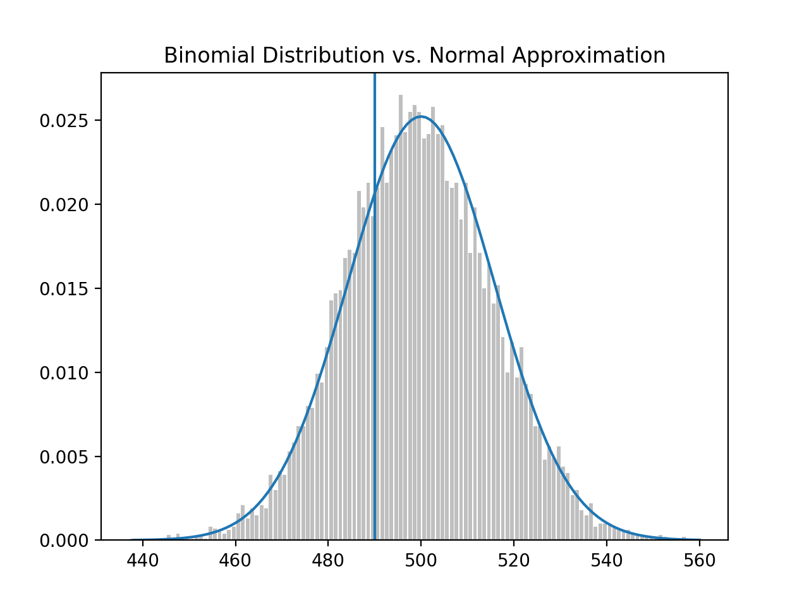
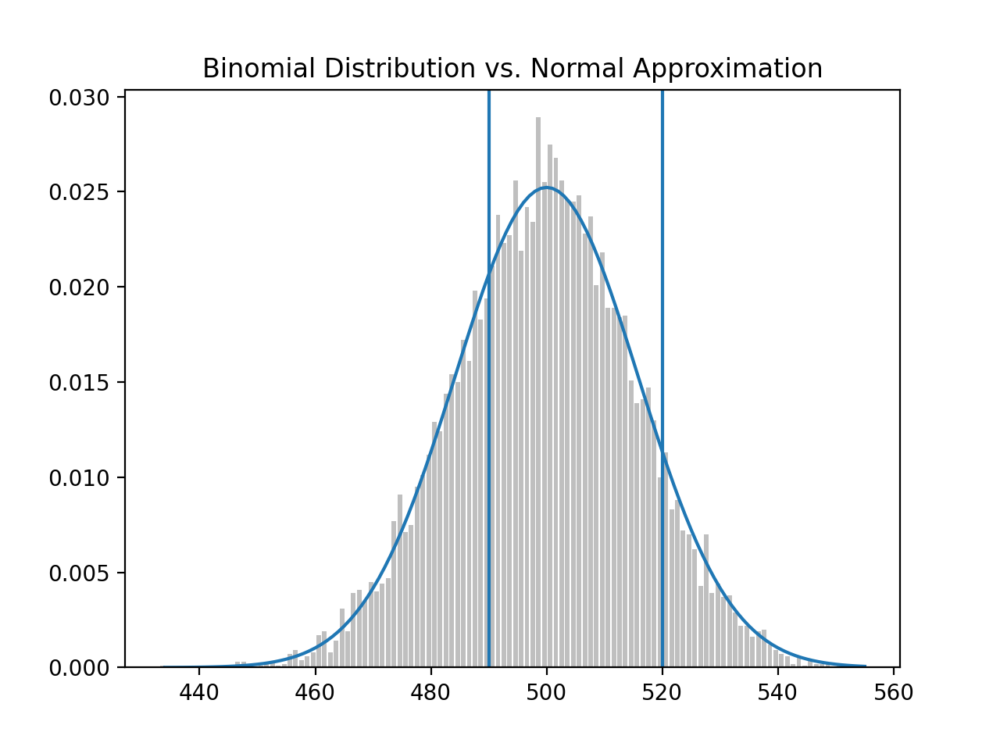
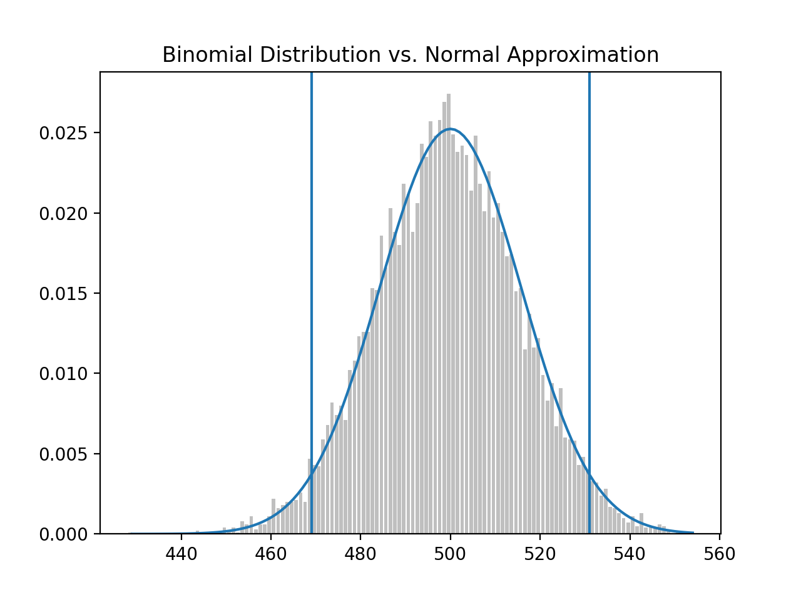
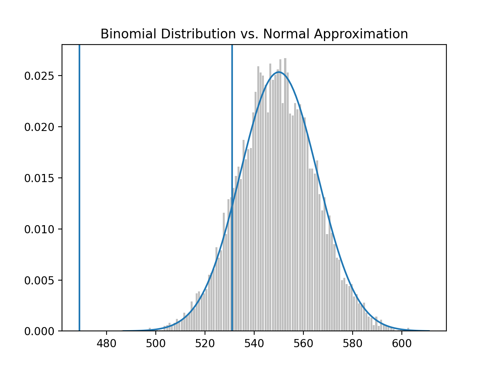
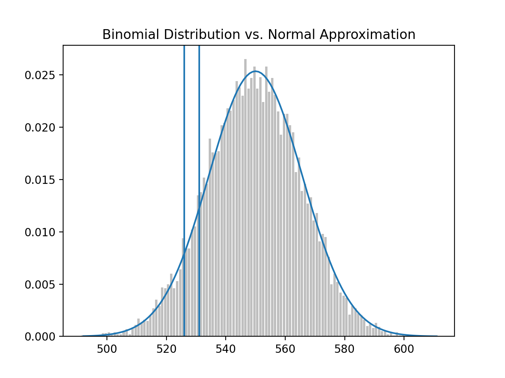
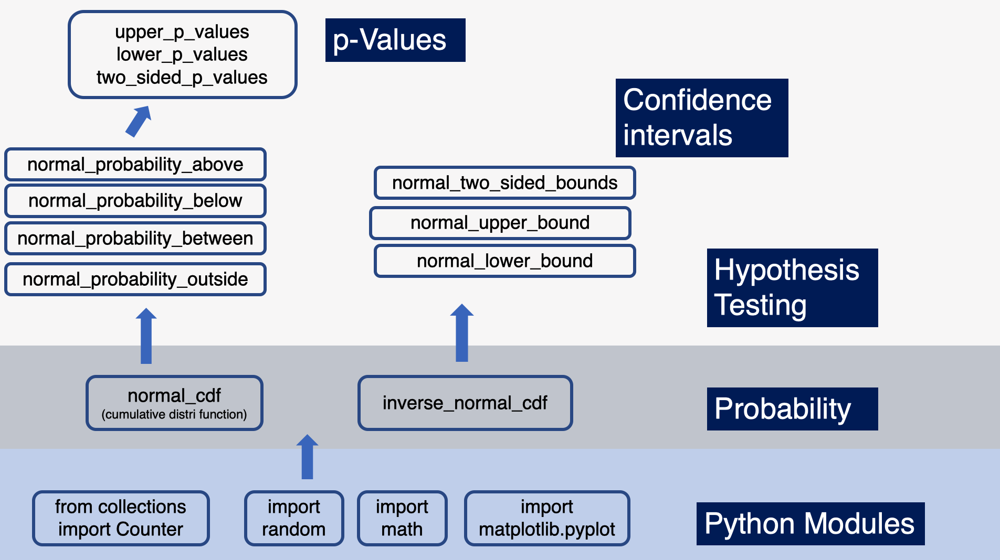
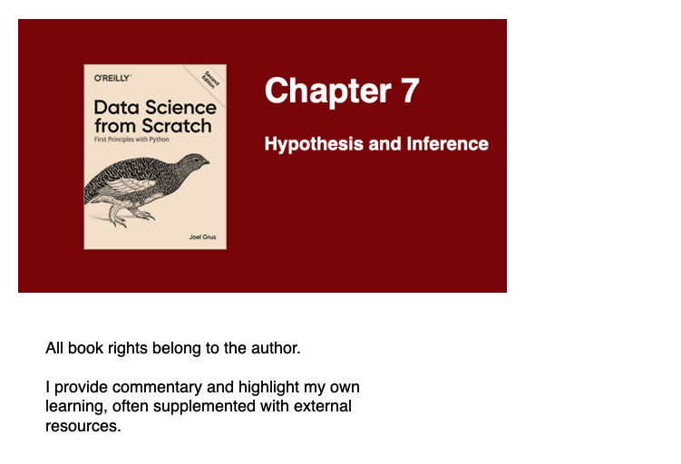

Data Science from Scratch (ch7) - Hypothesis and Inference
Connecting probability and statistics to hypothesis testing and inference
Table of contents
Overview
This is a continuation of my progress through Data Science from Scratch by Joel Grus. We’ll use a classic coin-flipping example in this post because it is simple to illustrate with both concept and code. The goal of this post is to connect the dots between several concepts including the Central Limit Theorem, Hypothesis Testing, p-Values and confidence intervals, using python to build our intuition.
Central_Limit_Theorem
Terms like “null” and “alternative” hypothesis are used quite frequently, so let’s set some context. The “null” is the default position. The “alternative”, alt for short, is something we’re comparing to the default (null).
The classic coin-flipping exercise is to test the fairness off a coin. If a coin is fair, it’ll land on heads 50% of the time (and tails 50% of the time). Let’s translate into hypothesis testing language:
Null Hypothesis: Probability of landing on Heads = 0.5.
Alt Hypothesis: Probability of landing on Heads != 0.5.
Each coin flip is a Bernoulli trial, which is an experiment with two outcomes - outcome 1, “success”, (probability p) and outcome 0, “fail” (probability p - 1). The reason it’s a Bernoulli trial is because there are only two outcome with a coin flip (heads or tails). Read more about Bernoulli here.
Here’s the code for a single Bernoulli Trial:
def bernoulli_trial(p: float) -> int:
"""Returns 1 with probability p and 0 with probability 1-p"""
return 1 if random.random() < p else 0
When you sum the independent Bernoulli trials, you get a Binomial(n,p) random variable, a variable whose possible values have a probability distribution. The central limit theorem says as n or the number of independent Bernoulli trials get large, the Binomial distribution approaches a normal distribution.
Here’s the code for when you sum all the Bernoulli Trials to get a Binomial random variable:
def binomial(n: int, p: float) -> int:
"""Returns the sum of n bernoulli(p) trials"""
return sum(bernoulli_trial(p) for _ in range(n))
Note: A single ‘success’ in a Bernoulli trial is ‘x’. Summing up all those x’s into X, is a Binomial random variable. Success doesn’t imply desirability, nor does “failure” imply undesirability. They’re just terms to count the cases we’re looking for (i.e., number of heads in multiple coin flips to assess a coin’s fairness).
Given that our null is (p = 0.5) and alt is (p != 0.5), we can run some independent bernoulli trials, then sum them up to get a binomial random variable.

Each bernoulli_trial is an experiment with either 0 or 1 as outcomes. The binomial function sums up n bernoulli(0.5) trails. We ran both twice and got different results. Each bernoulli experiment can be a success(1) or faill(0); summing up into a binomial random variable means we’re taking the probability p(0.5) that a coin flips head and we ran the experiment 1,000 times to get a random binomial variable.
The first 1,000 flips we got 510. The second 1,000 flips we got 495. We can repeat this process many times to get a distribution. We can plot this distribution to reinforce our understanding. To this we’ll use binomial_histogram function. This function picks points from a Binomial(n,p) random variable and plots their histogram.
from collections import Counter
import matplotlib.pyplot as plt
def normal_cdf(x: float, mu: float = 0, sigma: float = 1) -> float:
return (1 + math.erf((x - mu) / math.sqrt(2) / sigma)) / 2
def binomial_histogram(p: float, n: int, num_points: int) -> None:
"""Picks points from a Binomial(n, p) and plots their histogram"""
data = [binomial(n, p) for _ in range(num_points)]
# use a bar chart to show the actual binomial samples
histogram = Counter(data)
plt.bar([x - 0.4 for x in histogram.keys()],
[v / num_points for v in histogram.values()],
0.8,
color='0.75')
mu = p * n
sigma = math.sqrt(n * p * (1 - p))
# use a line chart to show the normal approximation
xs = range(min(data), max(data) + 1)
ys = [normal_cdf(i + 0.5, mu, sigma) -
normal_cdf(i - 0.5, mu, sigma) for i in xs]
plt.plot(xs, ys)
plt.title("Binomial Distribution vs. Normal Approximation")
plt.show()
# call function
binomial_histogram(0.5, 1000, 10000)
This plot is then rendered:

What we did was sum up independent bernoulli_trial(s) of 1,000 coin flips, where the probability of head is p = 0.5, to create a binomial random variable. We then repeated this a large number of times (N = 10,000), then plotted a histogram of the distribution of all binomial random variables. And because we did it so many times, it approximates the standard normal distribution (smooth bell shape curve).
Just to demonstrate how this works, we can generate several binomial random variables:

If we do this 10,000 times, we’ll generate the above histogram. You’ll notice that because we are testing whether the coin is fair, the probability of heads (success) should be at 0.5 and, from 1,000 coin flips, the mean(mu) should be a 500.
We have another function that can help us calculate normal_approximation_to_binomial:
import random
from typing import Tuple
import math
def normal_approximation_to_binomial(n: int, p: float) -> Tuple[float, float]:
"""Return mu and sigma corresponding to a Binomial(n, p)"""
mu = p * n
sigma = math.sqrt(p * (1 - p) * n)
return mu, sigma
# call function
# (500.0, 15.811388300841896)
normal_approximation_to_binomial(1000, 0.5)
When calling the function with our parameters, we get a mean mu of 500 (from 1,000 coin flips) and a standard deviation sigma of 15.8114. Which means that 68% of the time, the binomial random variable will be 500 +/- 15.8114 and 95% of the time it’ll be 500 +/- 31.6228 (see
68-95-99.7 rule)
Hypothesis_Testing
Now that we have seen the results of our “coin fairness” experiment plotted on a binomial distribution (approximately normal), we will be, for the purpose of testing our hypothesis, be interested in the probability of its realized value (binomial random variable) lies within or outside a particular interval.
This means we’ll be interested in questions like:
- What’s the probability that the binomial(n,p) is below a threshold?
- Above a threshold?
- Between an interval?
- Outside an interval?
First, the normal_cdf (normal cummulative distribution function), which we learned in a
previous post, is the probability of a variable being below a certain threshold.
Here, the probability of X (success or heads for a ‘fair coin’) is at 0.5 (mu = 500, sigma = 15.8113), and we want to find the probability that X falls below 490, which comes out to roughly 26%
normal_probability_below = normal_cdf
# probability that binomal random variable, mu = 500, sigma = 15.8113, is below 490
# 0.26354347477247553
normal_probability_below(490, 500, 15.8113)
On the other hand, the normal_probability_above, probability that X falls above 490 would be
1 - 0.2635 = 0.7365 or roughly 74%.
def normal_probability_above(lo: float,
mu: float = 0,
sigma: float = 1) -> float:
"""The probability that an N(mu, sigma) is greater than lo."""
return 1 - normal_cdf(lo, mu, sigma)
# 0.7364565252275245
normal_probability_above(490, 500, 15.8113)
To make sense of this we need to recall the binomal distribution, that approximates the normal distribution, but we’ll draw a vertical line at 490.

We’re asking, given the binomal distribution with mu 500 and sigma at 15.8113, what is the probability that a binomal random variable falls below the threshold (left of the line); the answer is approximately 26% and correspondingly falling above the threshold (right of the line), is approximately 74%.
Between interval
We may also wonder what the probability of a binomial random variable falling between 490 and 520:

Here is the function to calculate this probability and it comes out to approximately 63%. note: Bear in mind the full area under the curve is 1.0 or 100%.
def normal_probability_between(lo: float,
hi: float,
mu: float = 0,
sigma: float = 1) -> float:
"""The probability that an N(mu, sigma) is between lo and hi."""
return normal_cdf(hi, mu, sigma) - normal_cdf(lo, mu, sigma)
# 0.6335061861416337
normal_probability_between(490, 520, 500, 15.8113)
Finally, the area outside of the interval should be 1 - 0.6335 = 0.3665:
def normal_probability_outside(lo: float,
hi: float,
mu: float = 0,
sigma: float = 1) -> float:
"""The probability that an N(mu, sigma) is not between lo and hi."""
return 1 - normal_probability_between(lo, hi, mu, sigma)
# 0.3664938138583663
normal_probability_outside(490, 520, 500, 15.8113)
In addition to the above, we may also be interested in finding (symmetric) intervals around the mean that account for a certain level of likelihood, for example, 60% probability centered around the mean.
For this operation we would use the inverse_normal_cdf:
def inverse_normal_cdf(p: float,
mu: float = 0,
sigma: float = 1,
tolerance: float = 0.00001) -> float:
"""Find approximate inverse using binary search"""
# if not standard, compute standard and rescale
if mu != 0 or sigma != 1:
return mu + sigma * inverse_normal_cdf(p, tolerance=tolerance)
low_z = -10.0 # normal_cdf(-10) is (very close to) 0
hi_z = 10.0 # normal_cdf(10) is (very close to) 1
while hi_z - low_z > tolerance:
mid_z = (low_z + hi_z) / 2 # Consider the midpoint
mid_p = normal_cdf(mid_z) # and the CDF's value there
if mid_p < p:
low_z = mid_z # Midpoint too low, search above it
else:
hi_z = mid_z # Midpoint too high, search below it
return mid_z
First we’d have to find the cutoffs where the upper and lower tails each contain 20% of the probability. We calculate normal_upper_bound and normal_lower_bound and use those to calculate the normal_two_sided_bounds.
def normal_upper_bound(probability: float,
mu: float = 0,
sigma: float = 1) -> float:
"""Returns the z for which P(Z <= z) = probability"""
return inverse_normal_cdf(probability, mu, sigma)
def normal_lower_bound(probability: float,
mu: float = 0,
sigma: float = 1) -> float:
"""Returns the z for which P(Z >= z) = probability"""
return inverse_normal_cdf(1 - probability, mu, sigma)
def normal_two_sided_bounds(probability: float,
mu: float = 0,
sigma: float = 1) -> Tuple[float, float]:
"""
Returns the symmetric (about the mean) bounds
that contain the specified probability
"""
tail_probability = (1 - probability) / 2
# upper bound should have tail_probability above it
upper_bound = normal_lower_bound(tail_probability, mu, sigma)
# lower bound should have tail_probability below it
lower_bound = normal_upper_bound(tail_probability, mu, sigma)
return lower_bound, upper_bound
So if we wanted to know what the cutoff points were for a 60% probability around the mean and standard deviation (mu = 500, sigma = 15.8113), it would be between 486.69 and 513.31.
Said differently, this means roughly 60% of the time, we can expect the binomial random variable to fall between 486 and 513.
# (486.6927811021805, 513.3072188978196)
normal_two_sided_bounds(0.60, 500, 15.8113)
Significance and Power
Now that we have a handle on the binomial normal distribution, thresholds (left and right of the mean), and cut-off points, we want to make a decision about significance. Probably the most important part of statistical significance is that it is a decision to be made, not a standard that is externally set.
Significance is a decision about how willing we are to make a type 1 error (false positive), which we explored in a previous post. The convention is to set it to a 5% or 1% willingness to make a type 1 error. Suppose we say 5%.
We would say that out of 1,000 coin flips, 95% of the time, we’d get between 469 and 531 heads on a “fair coin” and 5% of the time, outside of this 469-531 range.
# (469.0104394712448, 530.9895605287552)
normal_two_sided_bounds(0.95, 500, 15.8113)
If we recall our hypotheses:
Null Hypothesis: Probability of landing on Heads = 0.5 (fair coin)
Alt Hypothesis: Probability of landing on Heads != 0.5 (biased coin)
Each binomial distribution (test) that consist of 1,000 bernoulli trials, each test where the number of heads falls outside the range of 469-531, we’ll reject the null that the coin is fair. And we’ll be wrong (false positive), 5% of the time. It’s a false positive when we incorrectly reject the null hypothesis, when it’s actually true.
We also want to avoid making a type-2 error (false negative), where we fail to reject the null hypothesis, when it’s actually false.
Note: Its important to keep in mind that terms like significance and power are used to describe tests, in our case, the test of whether a coin is fair or not. Each test is the sum of 1,000 independent bernoulli trials.
For a “test” that has a 95% significance, we’ll assume that out of a 1,000 coin flips, it’ll land on heads between 469-531 times and we’ll determine the coin is fair. For the 5% of the time it lands outside of this range, we’ll determine the coin to be “unfair”, but we’ll be wrong because it actually is fair.
To calculate the power of the test, we’ll take the assumed mu and sigma with a 95% bounds (based on the assumption that the probability of the coin landing on heads is 0.5 or 50% - a fair coin). We’ll determine the lower and upper bounds:
lo, hi = normal_two_sided_bounds(0.95, mu_0, sigma_0)
lo # 469.01026640487555
hi # 530.9897335951244
And if the coin was actually biased, we should reject the null, but we fail to. Let’s suppose the actual probability that the coin lands on heads is 55% ( biased towards head):
mu_1, sigma_1 = normal_approximation_to_binomial(1000, 0.55)
mu_1 # 550.0
sigma_1 # 15.732132722552274
Using the same range 469 - 531, where the coin is assumed ‘fair’ with mu at 500 and sigma at 15.8113:

If the coin, in fact, had a bias towards head (p = 0.55), the distribution would shift right, but if our 95% significance test remains the same, we get:

The probability of making a type-2 error is 11.345%. This is the probability that we’re see that the coin’s distribution is within the previous interval 469-531, thinking we should accept the null hypothesis (that the coin is fair), but in actuality, failing to see that the distribution has shifted to the coin having a bias towards heads.
# 0.11345199870463285
type_2_probability = normal_probability_between(lo, hi, mu_1, sigma_1)
The other way to arrive at this is to find the probability, under the new mu and sigma (new distribution), that X (number of successes) will fall below 531.
# 0.11357762975476304
normal_probability_below(531, mu_1, sigma_1)
So the probability of making a type-2 error or the probability that the new distribution falls below 531 is approximately 11.3%.
The power to detect a type-2 error is 1.00 minus the probability of a type-2 error (1 - 0.113 = 0.887), or 88.7%.
power = 1 - type_2_probability # 0.8865480012953671
Finally, we may be interested in increasing power to detect a type-2 error. Instead of using a normal_two_sided_bounds function to find the cut-off points (i.e., 469 and 531), we could use a one-sided test that rejects the null hypothesis (‘fair coin’) when X (number of heads on a coin-flip) is much larger than 500.
Here’s the code, using normal_upper_bound:
# 526.0073585242053
hi = normal_upper_bound(0.95, mu_0, sigma_0)
This means shifting the upper bounds from 531 to 526, providing more probability in the upper tail. This means the probability of a type-2 error goes down from 11.3 to 6.3.

# previous probability of type-2 error
# 0.11357762975476304
normal_probability_below(531, mu_1, sigma_1)
# new probability of type-2 error
# 0.06356221447122662
normal_probability_below(526, mu_1, sigma_1)
And the new (stronger) power to detect type-2 error is 1.0 - 0.064 = 0.936 or 93.6% (up from 88.7% above).
p_values
p-Values represent another way of deciding whether to accept or reject the Null Hypothesis. Instead of choosing bounds, thresholds or cut-off points, we could compute the probability, assuming the Null Hypothesis is true, that we would see a value as extreme as the one we just observed.
Here is the code:
def two_sided_p_values(x: float, mu: float = 0, sigma: float = 1) -> float:
"""
How likely are we to see a value at least as extreme as x (in either
direction) if our values are from an N(mu, sigma)?
"""
if x >= mu:
# x is greater than the mean, so the tail is everything greater than x
return 2 * normal_probability_above(x, mu, sigma)
else:
# x is less than the mean, so the tail is everything less than x
return 2 * normal_probability_below(x, mu, sigma)
If we wanted to compute, assuming we have a “fair coin” (mu = 500, sigma = 15.8113), what is the probability of seeing a value like 530? (note: We use 529.5 instead of 530 below due to
continuity correction)
Answer: approximately 6.2%
# 0.06207721579598835
two_sided_p_values(529.5, mu_0, sigma_0)
The p-value, 6.2% is higher than our (hypothetical) 5% significance, so we don’t reject the null. On the other hand, if X was slightly more extreme, 532, the probability of seeing that value would be approximately 4.3%, which is less than 5% significance, so we would reject the null.
# 0.04298479507085862
two_sided_p_values(532, mu_0, sigma_0)
For one-sided tests, we would use the normal_probability_above and normal_probability_below functions created above:
upper_p_value = normal_probability_above
lower_p_value = normal_probability_below
Under the two_sided_p_values test, the extreme value of 529.5 had a probability of 6.2% of showing up, but not low enough to reject the null hypothesis.
However, with a one-sided test, upper_p_value for the same threshold is now 3.1% and we would reject the null hypothesis.
# 0.031038607897994175
upper_p_value(529.5, mu_0, sigma_0)
Confidence_Intervals
A third approach to deciding whether to accept or reject the null is to use confidence intervals. We’ll use the 530 as we did in the p-Values example.
p_hat = 530/1000
mu = p_hat
sigma = math.sqrt(p_hat * (1 - p_hat) / 1000) # 0.015782902141241326
# (0.4990660982192851, 0.560933901780715)
normal_two_sided_bounds(0.95, mu, sigma)
The confidence interval for a coin flipping heads 530 (out 1,000) times is (0.4991, 0.5609). Since this interval contains the p = 0.5 (probability of heads 50% of the time, assuming a fair coin), we do not reject the null.
If the extreme value were more extreme at 540, we would arrive at a different conclusion:
p_hat = 540/1000
mu = p_hat
sigma = math.sqrt(p_hat * (1 - p_hat) / 1000)
(0.5091095927295919, 0.5708904072704082)
normal_two_sided_bounds(0.95, mu, sigma)
Here we would be 95% confident that the mean of this distribution is contained between 0.5091 and 0.5709 and this does not contain 0.500 (albiet by a slim margin), so we reject the null hypothesis that this is a fair coin.
note: Confidence intervals are about the interval not probability p. We interpret the confidence interval as, if you were to repeat the experiment many times, 95% of the time, the “true” parameter, in our example p = 0.5, would lie within the observed confidence interval.
Connecting_Dots
We used several python functions to build intuition around statistical hypothesis testing. To higlight this “from scratch” aspect of the book here is a diagram tying together the various python function used in this post:

In the next post, we’ll cover Gradient Descent!

For more content on data science, machine learning, R, Python, SQL and more, find me on Twitter.
Paul Apivat Hanvongse
Self-Employed | Getwyze
My interests include data science, machine learning and R/Python programming.